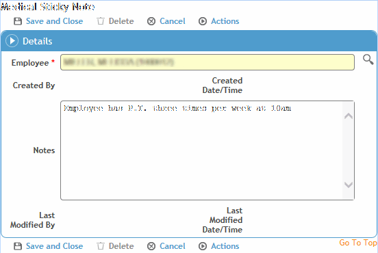

Sticky notes provide a means to enter alert-type notes that may be relevant to any Occupational Health module. Any user with rights to one of these modules can view, create, edit, or delete a sticky note.
If a sticky note exists, it appears in yellow beside the Occupational Health menu. If no sticky note has been entered for the selected employee (or if no employee has yet been selected globally), the icon is greyed out.
An employee must be selected globally in order to add or view their sticky note; for more information, see Selecting an Employee Record.
To open a sticky note or add one, click the icon. You can add, edit, or delete the text. Remember, this note is visible to all users who access any of this employee’s medical records.
